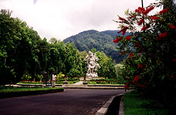
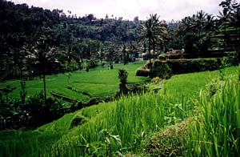
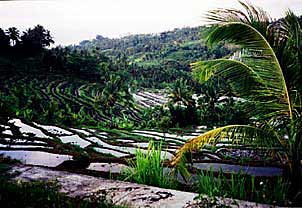
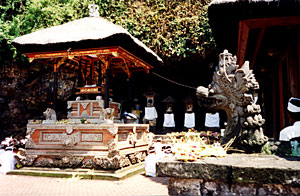
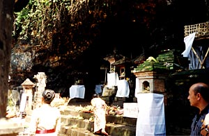

|
Sent: 1 Nov 99 05:37 PST web version, with
|

|
| Prior Trav-E-Log: Snorkeling Bali is ... gardens and temples and ricefields.... | |
(Note:) This is the 5th in a series of Trav-E-Logs sent while traveling in S.E.Asia between Oct 16, 1999 and Jan 22, 2000.
| Hi Folks,
Just a quick note to let you know I was thinking about everyone on Halloween. Was studying at the Pondok Pekak Resource Center, when I noticed someone starting to decorate the place in orange and black. You guessed it, a spooky party for the kids, aged one to about eight years old, from all over the world. So I rolled up my sleeves, and four hours later, the place was decorated. We carved over a dozen Jack-o-lanterns, and had various snacks to distribute for the "trick or treaters". Actually, the other reason for this email is to place everyone's address in my Hotmail address book. A word to the wise -- Hotmail webmail is about three times faster than Netscape's email client, probably due to the latter's intense use of graphics. Bill (Bali photos continue below)
|

 |
|  | 
Next Trav-E-Log: The Good, The Ugly, ... |